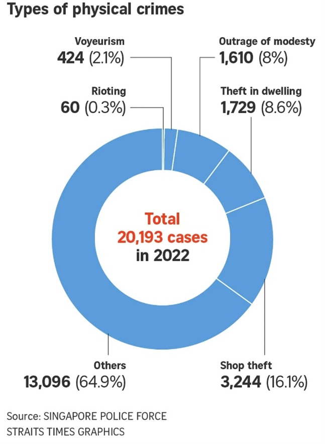

Assignment 2
Ruth Poh
Case Study 1
This pie chart is from a Straits Times article on the annual crime statistics. The intent is to highlight the five main crimes of concern.
David Sun, “Physical Crime Rises in 2022, with Molestation, Voyeurism, Theft among Crimes of Concern: Police,” The Straits Times, February 16, 2023, https://www.straitstimes.com/singapore/physical-crime-rose-in-2022-with-molest-voyeurism-and-theft-considered-crimes-of-concern-police
Data
1. It does not communicate much to the reader when most of the physical crimes fall under the “others category”.
2. Data could be streamlined. It currently has both percentages and the absolute numbers.
Idiom
1. Confusing as there are too many segments.
2. Hierarchy of fonts error - font size for the numbers are larger than the type of crime, when the types of crimes should be more important, and hence larger, than the numbers.
3. Hierarchy of position error - people typically read from the top to the bottom; and from the highest proportion to the lowest one. This flips it around where we first read the crimes with the lower percentages. There is also no clear steps in readability.
How to make it better
1. Use a dot matrix chart to make it easier to compare across groups with a greyed-out portion for the “others” category so people can focus on the key top physical crimes that have been committed and the relative difference in quantity across the group. The other categories can be in different colours since the data set is normative. Order it from the largest proportion to the smallest.
Example of a dot matrix chart:
The Data Visualisation Catalogue https://datavizcatalogue.com/methods/dot_matrix_chart.html
How to make it better
2. A stacked bar graph is also another option as it makes it more readable, and the hierarchies can be clearer.
Example of stacked bar graph:
The Data Visualisation Catalogue https://datavizcatalogue.com/methods/dot_matrix_chart.html
Case Study 2
David Sun, “Physical Crime Rises in 2022, with Molestation, Voyeurism, Theft among Crimes of Concern: Police,” The Straits Times, February 16, 2023, https://www.straitstimes.com/singapore/physical-crime-rose-in-2022-with-molest-voyeurism-and-theft-considered-crimes-of-concern-police
Data
1. The data can be confusing as the subsets of each large category do not add up to the total. E.g. There are a total of 1,359 “theft in dwelling”; but 716 thefts in “residential premises” and 382 thefts in “commercial properties” (adding up to 1099).
2. There appears to be a spike in everything, but this is due to the COVID-19 re-opening. This caveat was mentioned in the main article text but not reflected in the graph. Hence there are significant spikes like for outrage of modesty in nightspots (which were mostly closed in 2021).
Idiom
1. Ease of interpretation - the bar chart is long and after a certain point of scrolling, the reader forgets what the light blue bar refers to and the dark blue bar refers to.
2. Unclear hierarchies - It is unclear which are subcategories of major crimes, and which are the major crimes.
3. Readability - The font size is too small. And the differences in between the years are not visible/ stark enough as the absolute numbers are low. For instance, there was around a six time jump in numbers for outrage of modesty crimes in nightspots but as the bars are so small, it can hardly be seen.
How to make it better
1. Include additional years (pre-COVID) into the graph for a fuller picture. Place the category axis of the years at the side of each bar instead of using a legend so the user doesn’t have to remember what the bar colours refer to.
2. Use a bar of a bar graph (i.e. zoom in) to show what are the subcategories of each key crime and how it has changed over the years.
Example of a bar of a bar graph:
Chandoo https://chandoo.org/wp/pie-of-pie-of-pie-chart/
How to make it better
3. Alternative - Use a dot plot chart which makes increase more obvious.
Example of a dot plot chart:
Junk Charts by Kaiser Fung https://junkcharts.typepad.com/
How to make it better
4. Use colours to show that subcategories belong together.
Example:
Junk Charts by Kaiser Fung https://junkcharts.typepad.com/